PHENOVOXEL ARCHIVE · 0.6.67 · 3 NOVEMBER 2026Bald eagle &
emperor penguin
Revised adult plumage, eye surfaces and source-derived exteriors, with separate, bounded studies of aerial and underwater movement. This release changes two records in the 337-species archive.
These are educational reconstructions. Visual refinement and passing software checks do not establish a measured live-animal fit or scientific certification.
Bald eagle
Open interactive modelDownload textured GLBOriginal model and author
The adult white head and tail now contrast with dark brown wing and body feathers. The bill and bare feet are yellow, the iris pale, and talons dark. These adult cues and the nearly flat extended-wing profile follow Cornell Lab’s identification account and photographs. Immature birds have different plumage; this model represents an adult.
The displayed eagle now uses Pigcraft’s detailed CC BY flying reconstruction, with 259,018 body triangles. Its feather geometry and source UVs are retained in normalized coordinates. Pale wing bands in the artist texture are replaced with adult dark brown; head and tail remain white. Source feather detail is retained in the revised color and shallow normal response, with nonmetallic roughness and explicit eye surfaces. This is an artist reconstruction, not a measured live-animal scan. The earlier OscarWW archive payload is preserved unchanged.
Fly couples the arm and hand wings while keeping the legs tucked, then returns to extended wings. Glide posture holds nearly flat wings. Bank and return illustrates a shallow roll and tail gesture. The moving studies stop at eight display seconds. Species-specific telemetry distinguishes flapping, gliding, ascending and perching states (Bergen et al., 2022); it does not supply the wing angles used here. No measured wingbeat rate, lift, drag or trajectory is imported. Fish capture, landing and supported perching remain unavailable.
Source geometry: Pigcraft (https://sketchfab.com/s8819296); materials, eye surfaces and exterior rig by PhenoVoxel Archive. Model and derivative materials: CC BY 4.0. Credited primary source fingerprint recorded; original archive payload retained unchanged. Delivered GLB SHA256: 05180aa6a47b80d39e136e8464d0709109b0ca2c4a8e74ad71b5e3b816a1c0c9.
 Oblique · observe · 0 illustrative seconds. Actual rendered geometry; simplified compatibility lighting.
Oblique · observe · 0 illustrative seconds. Actual rendered geometry; simplified compatibility lighting.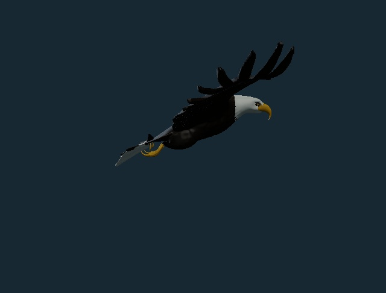
Side · observe · 0 illustrative seconds. Actual rendered geometry; simplified compatibility lighting.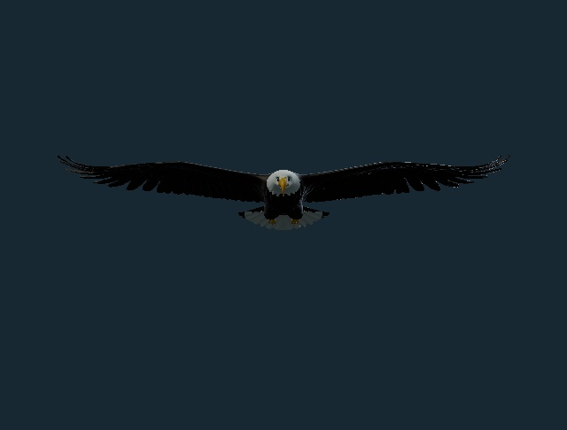
Front · observe · 0 illustrative seconds. Actual rendered geometry; simplified compatibility lighting.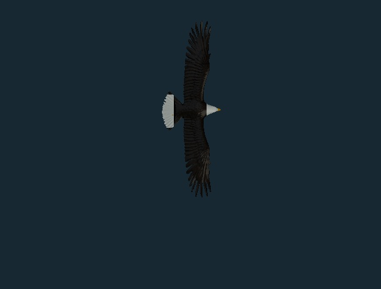
Top · observe · 0 illustrative seconds. Actual rendered geometry; simplified compatibility lighting.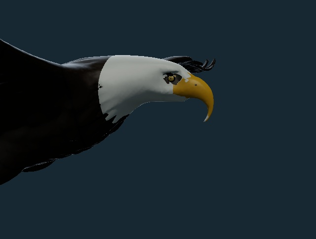
Head · observe · 0 illustrative seconds. Actual rendered geometry; simplified compatibility lighting.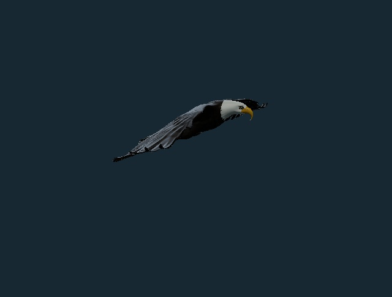
Movement · fly · 2.6 illustrative seconds. Actual rendered geometry; simplified compatibility lighting.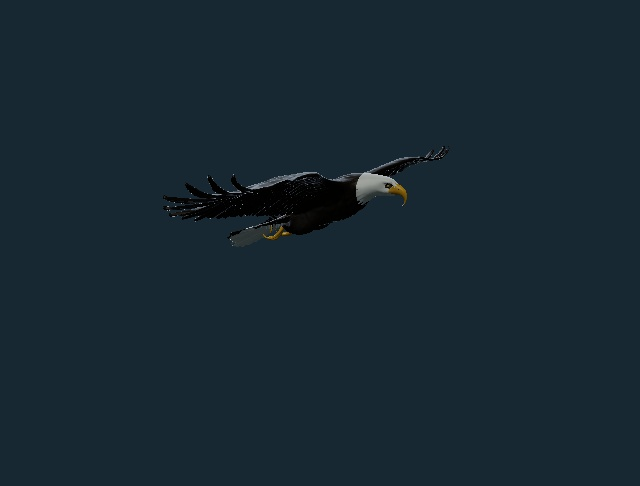
Glide · glide · 3 illustrative seconds. Actual rendered geometry; simplified compatibility lighting.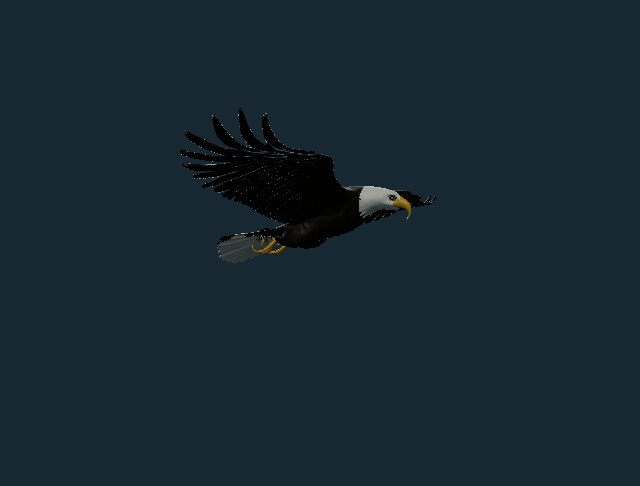
Late · bank · 5.2 illustrative seconds. Actual rendered geometry; simplified compatibility lighting.Emperor penguin
Open interactive modelDownload textured GLBOriginal model and author
The revised surface restores a dark head, grey dorsal plumage, pale breast and belly, broad pale-yellow neck patches and a pinkish lower-bill stripe. These adult cues follow the New Zealand Birds Online account and photographs. Color varies with the individual, light, age and condition; the museum scan remains a source reconstruction, not a live-animal morphometric fit.
The torso is slightly wider and scan surface noise is gently smoothed; scanned ice geometry is excluded, and eye surfaces are added. Source feather detail and the broad patch topology guide the revised atlas. Shallow fine relief suggests close-packed plumage. A separate, simple snow support is visible when standing and disappears for underwater studies.
Walk alternates sole support and recovery with restrained lateral sway, then returns to standing. Griffin & Kram (2000) measured lateral movement and energy exchange in walking emperor penguins; this in-place proxy does not reproduce their forces or energetic measurements. Swim places the pale belly downward, extends the head and shows paired flipper strokes before a glide. Underwater glide holds the flippers extended. Moving studies stop at eight display seconds.
Measured stroke rates vary during real emperor-penguin dives. Stroke-and-glide phases can reduce locomotor workload (Williams et al., 2012). This viewer calculates neither buoyancy nor depth, speed, oxygen stores, blood flow or muscle energy use. The Australian Antarctic Program describes cold adaptation and cooperative huddling; thermal balance, huddling, egg incubation and tobogganing are not animated here.
Source geometry: darwinmuseum.ru (https://sketchfab.com/darwinmuseum.ru); exterior, materials and rig revision by PhenoVoxel Archive. Model and derivative materials: CC BY 4.0. Credited primary source fingerprint recorded; original archive payload retained unchanged. Delivered GLB SHA256: 7f087ddab2061d85572d74543275b69398553c719e8542f638666034173f2aca.
 Oblique · observe · 0 illustrative seconds. Actual rendered geometry; simplified compatibility lighting.Side · observe · 0 illustrative seconds. Actual rendered geometry; simplified compatibility lighting.
Oblique · observe · 0 illustrative seconds. Actual rendered geometry; simplified compatibility lighting.Side · observe · 0 illustrative seconds. Actual rendered geometry; simplified compatibility lighting.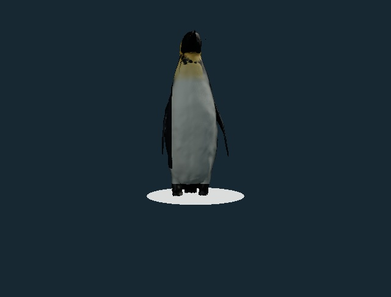
Front · observe · 0 illustrative seconds. Actual rendered geometry; simplified compatibility lighting.Top · observe · 0 illustrative seconds. Actual rendered geometry; simplified compatibility lighting.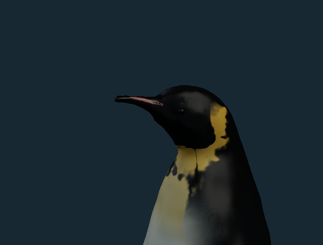
Head · observe · 0 illustrative seconds. Actual rendered geometry; simplified compatibility lighting.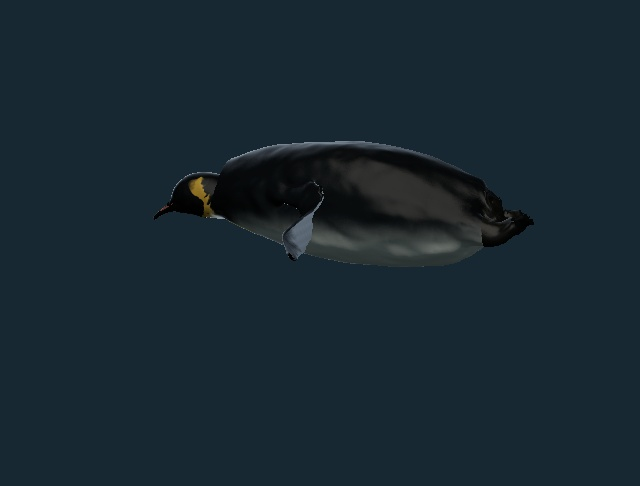
Movement · swim · 2.6 illustrative seconds. Actual rendered geometry; simplified compatibility lighting.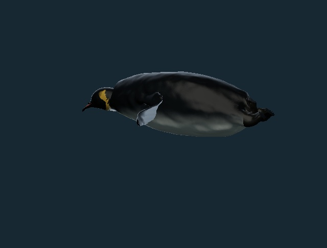
Glide · glide · 3 illustrative seconds. Actual rendered geometry; simplified compatibility lighting.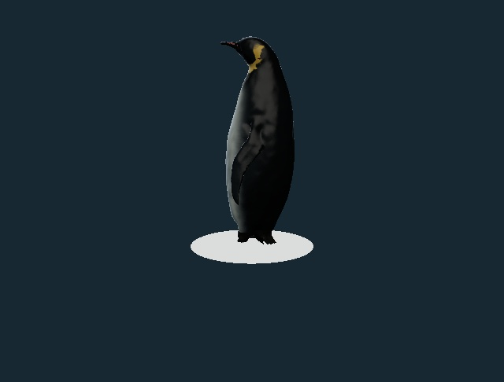
Late · walk · 5.2 illustrative seconds. Actual rendered geometry; simplified compatibility lighting.Verification and limits
The other 335 species records, all 337 identity/taxonomy/photo/occurrence records and 37 registered original source payloads are preserved. A strict reversible revision ledger retains the historical baseline. Tests check embedded maps, material hashes, skin weights, finite posed geometry, deterministic seeking, pose restoration, alternating foot support, belly-down swimming, paired wing/flipper motion and held end poses.
Display size and timing are uncalibrated. Source anatomy, individual feathers and skin optics still need specialist review. Aerodynamic and hydrodynamic forces, prey contact, ground forces, internal physiology and physiological sleep are not solved. No accuracy percentage or independent certification is claimed. No paid generation credits were used.
Source and preservation fingerprints · Material method and hashes · Validation scope · Attribution and changes · Archive